第 15 集: 机器学习总结与深度学习展望
1. 机器学习全貌: 一张地图
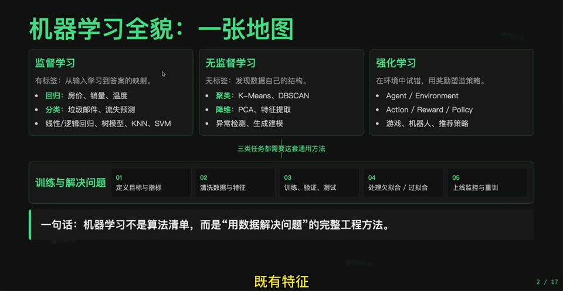
最后一集适合当作机器学习板块的总览索引。它把监督学习、无监督学习、模型训练、评估和工业工具串起来。
2. 机器学习究竟在学什么
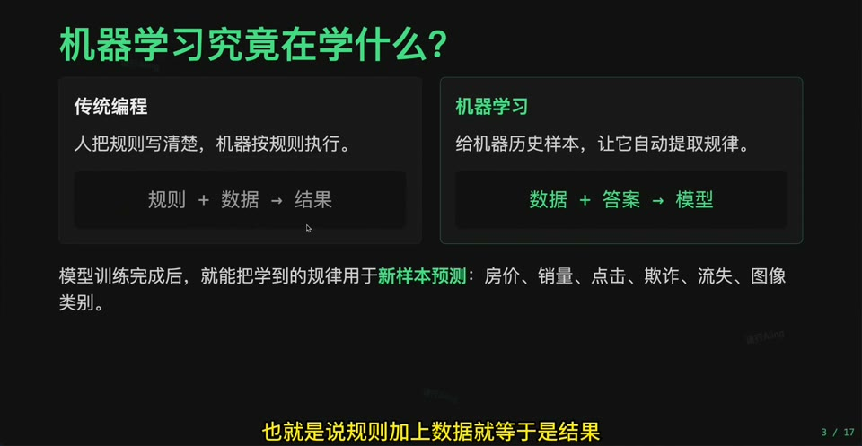
机器学习不是背公式,而是从数据中学习输入到输出的映射关系,并在新数据上泛化。
3. 数据、特征、标签、模型
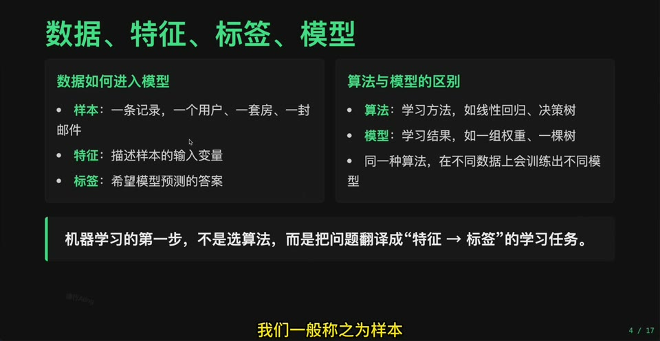
这四个词是机器学习最基础的语言: 数据提供样本,特征描述样本,标签提供目标,模型学习映射。
4. 监督学习: 有答案的学习
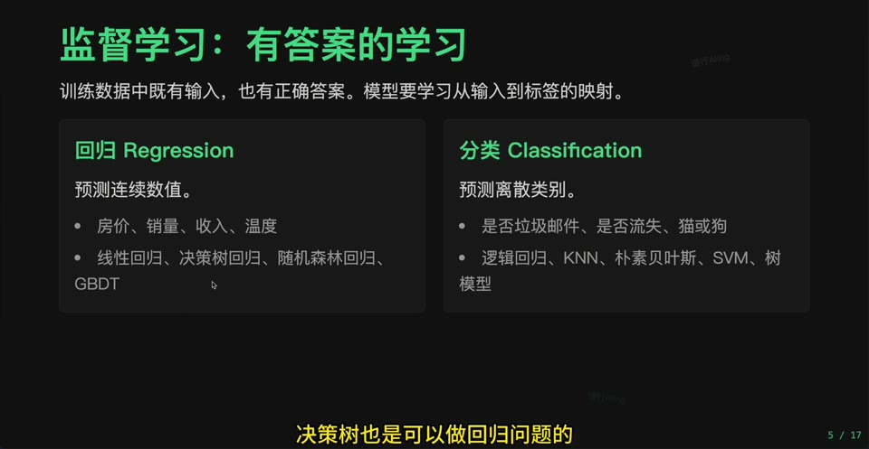
监督学习通过标签学习预测函数,典型任务包括回归和分类。线性回归与逻辑回归分别代表两个入口。
5. 典型监督学习算法
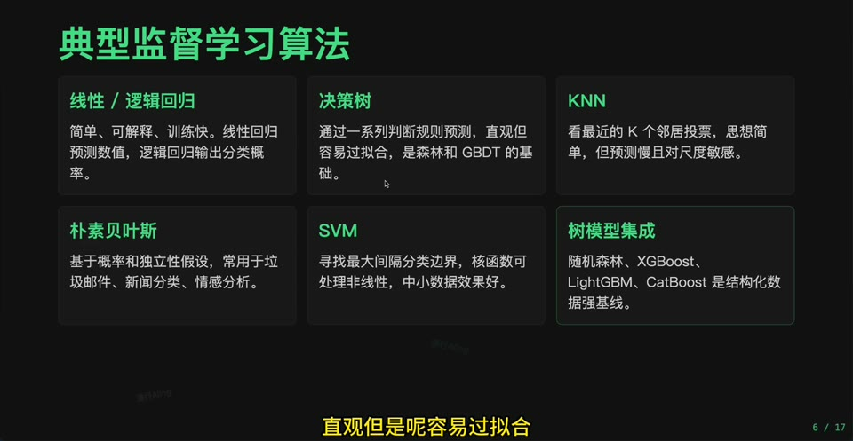
线性模型、逻辑回归、SVM、决策树、随机森林、GBDT 家族都可以放在监督学习主干下。
6. 从线性回归到可用模型
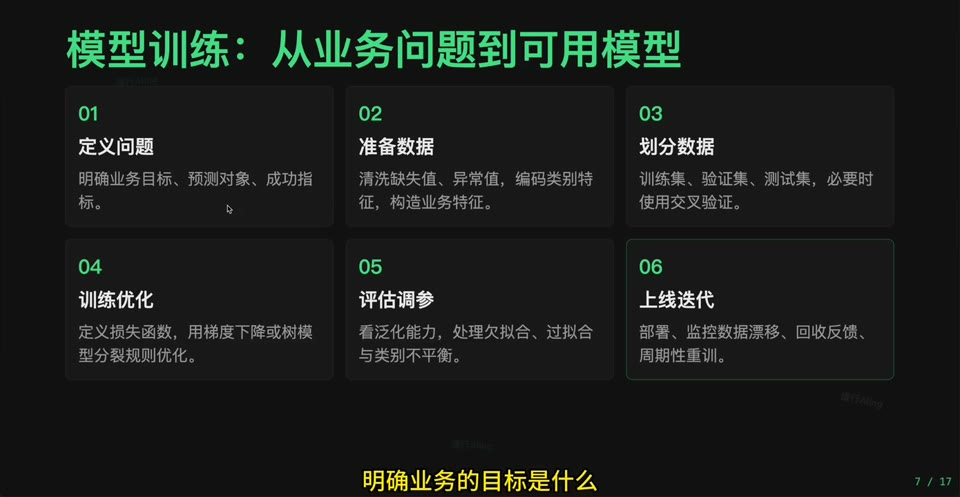
线性回归把数据、模型、损失、优化和评估串起来,是理解其他模型训练流程的基准。
7. 损失函数与梯度下降
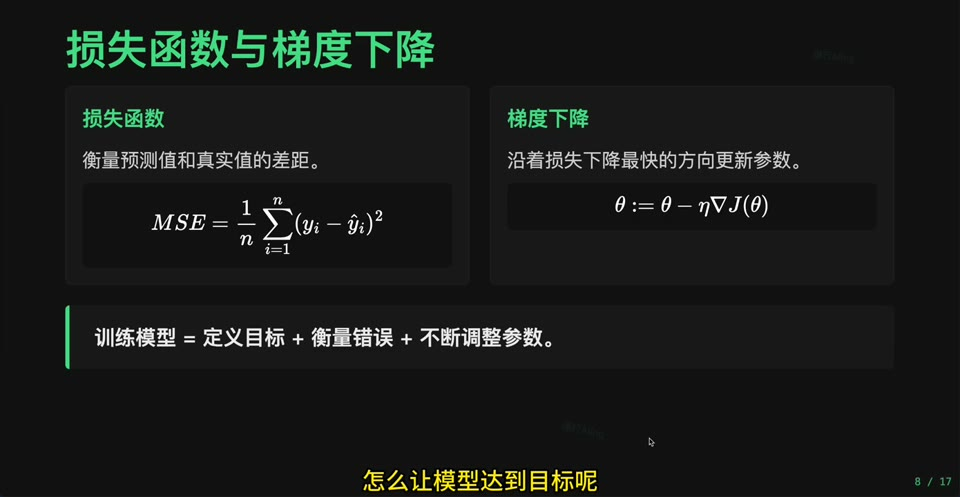
损失函数衡量模型好坏,梯度下降告诉参数如何更新。这是机器学习和深度学习共用的训练核心。
8. 模型评估: 不只看训练集
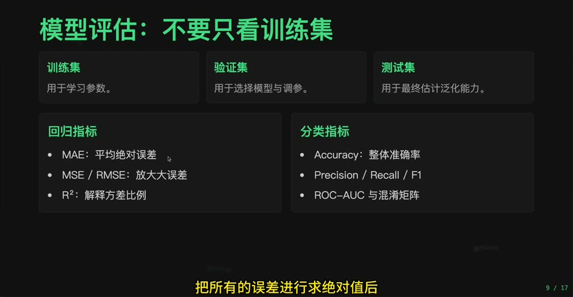
评估要关注泛化能力,所以要划分训练集/测试集,使用交叉验证,并选择合适指标。
9. 欠拟合、过拟合与解决方法
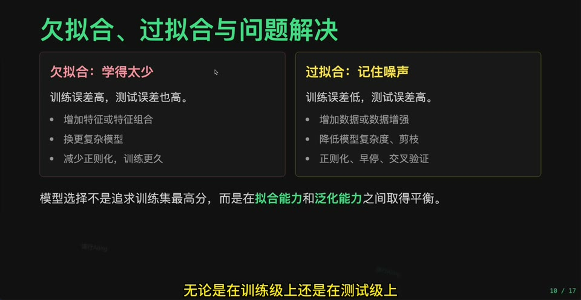
欠拟合和过拟合是模型诊断的主轴。复杂度、正则化、数据量、特征工程都会影响它们。
10. 集成学习: 让模型组成团队
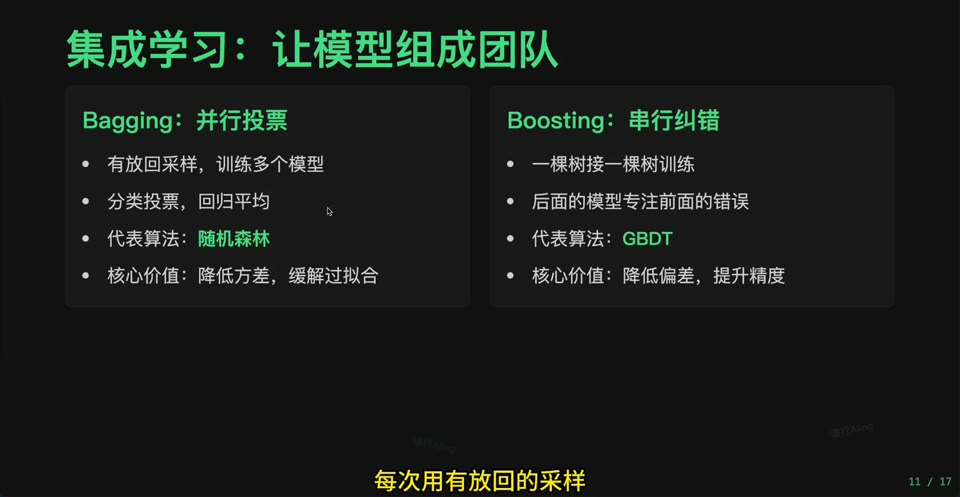
Bagging 和 Boosting 是两条重要路线: 前者并行投票降方差,后者逐步纠错提升拟合。
11. GBDT 家族
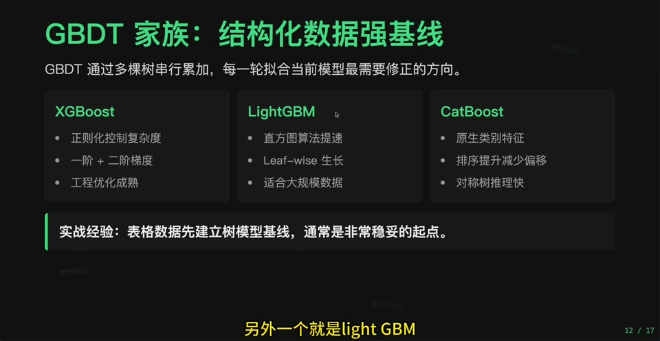
XGBoost、LightGBM、CatBoost 是表格数据建模中非常重要的工具链,适合实践阶段重点掌握。
12. 无监督学习: 从无标签数据中发现结构
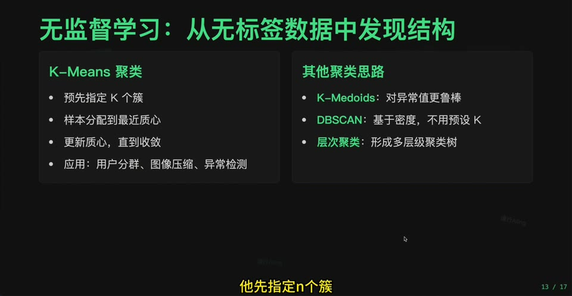
无监督学习没有标准答案,核心是发现结构。K-Means 负责聚类,PCA 负责降维。
13. PCA 降维
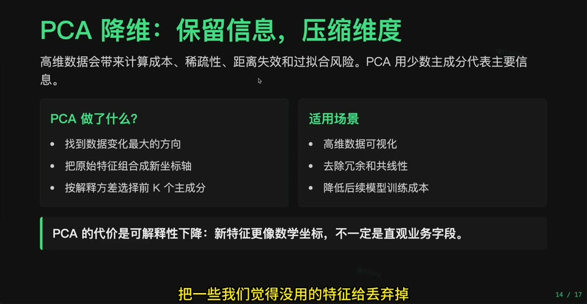
PCA 用主成分保留主要信息、压缩维度,也常用于可视化和预处理。
14. 工业界自动化工具地图
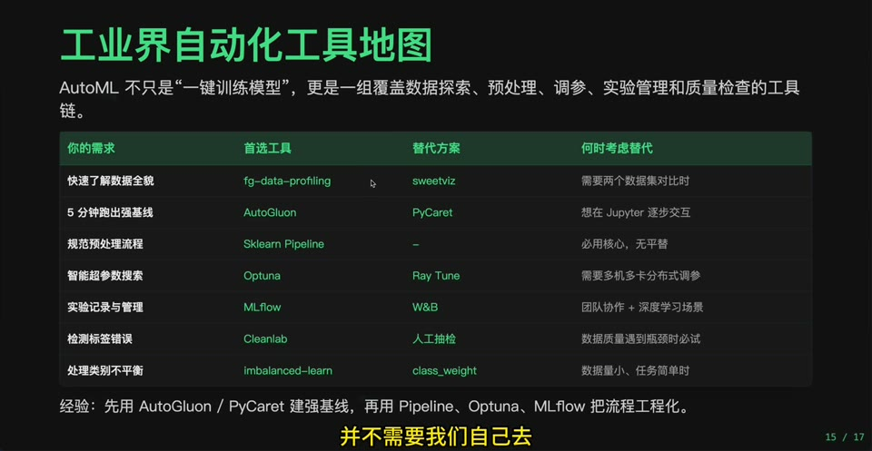
自动化机器学习工具把特征处理、模型选择、调参和评估流程部分自动化,但理解原理仍然重要。
补充：从本地工具到大数据工具
本地生产级工具和大数据级工具不是两套完全不同的机器学习思想。核心流程仍然是数据、特征、模型、损失函数、优化训练和泛化评估;变化主要在数据规模和计算方式。
- 本地学习与中小规模建模常用 pandas、numpy、sklearn、PyCaret、AutoGluon、Optuna、MLflow 等工具,重点是快速探索、建立 baseline、组织 Pipeline、调参和记录实验。
- 大数据场景通常先用 Spark 处理离线批数据,用 Flink 处理实时数据流,再把清洗后的数据转成可训练特征。
- 传统机器学习在大数据下可使用 Spark MLlib、分布式 XGBoost、分布式 LightGBM 等库训练模型;模型思想不变,实现变成多机分布式计算。
- 深度学习或更大规模训练常见 PyTorch Distributed、Ray Train、DeepSpeed 等方案;它们负责把训练过程扩展到多 GPU 或多机器。
- MLflow、W&B 这类实验管理工具仍然适用,因为它们主要记录数据版本、参数、指标、模型产物和上线版本,不直接承担全量数据计算。
因此,可以先用 sklearn 理清模型思想和训练闭环,再把同一套方法迁移到 Spark、Flink、Ray 等分布式体系中。
15. 可视化与分析工具
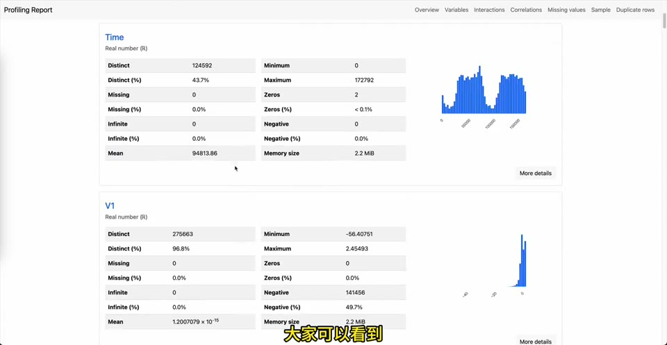
工具能提升效率,但不是替代理解。对学习路线来说,先理解模型和评估,再引入工具更稳。
16. 从机器学习走向深度学习
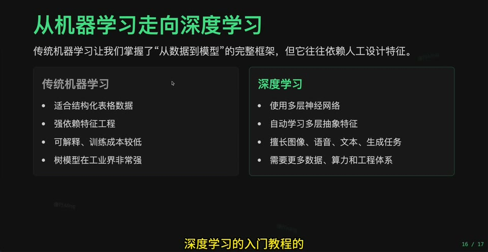
深度学习延续机器学习的训练框架,但把“模型函数”扩展为多层可学习表示。
17. 下一站: 深度学习
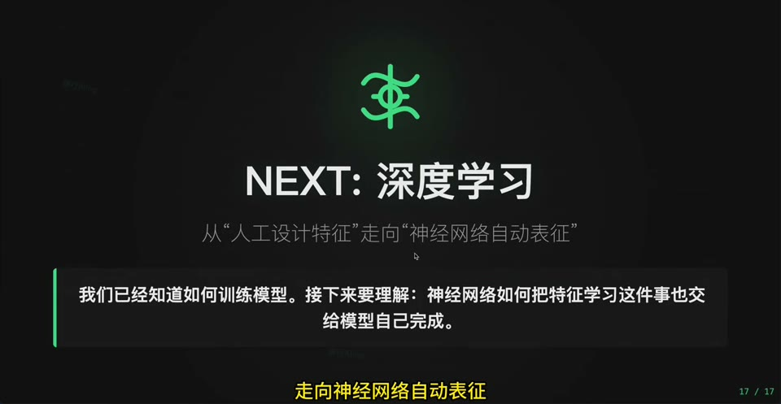
这集可以作为机器学习板块的收束节点,同时连接深度学习板块: 神经网络、CNN、RNN、Transformer。
入库建议
- 建议建立主节点
机器学习总览: 从数据到泛化模型。 - 它适合做机器学习知识地图首页,不要写成细节正文。
- 后续可把每个分支节点链接到西瓜书、南瓜书、sklearn 实验和本系列视频整理。